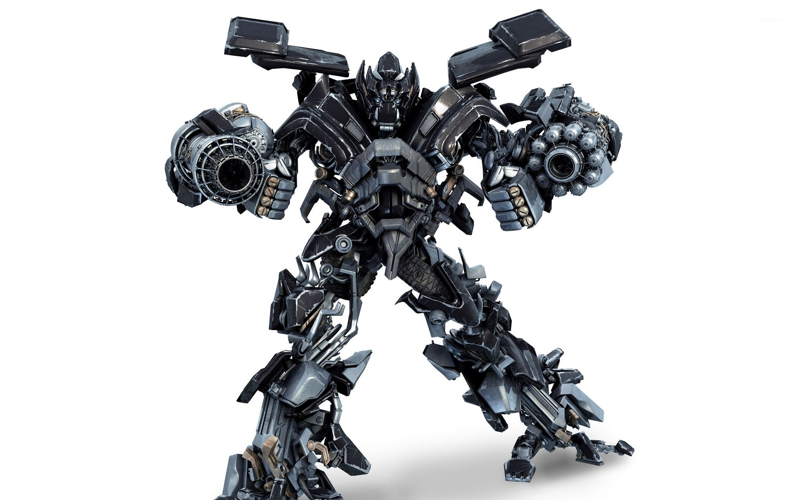
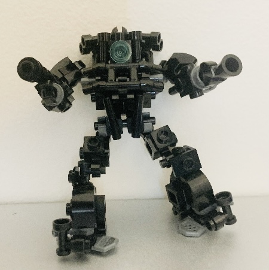

Is that my Lego Builds?
This is a small blog showing my awesome Lego Builds today with you peeps!
- A brief history of my lego journey:
- (The Brick) I was introduced to legos as a boy..
- (the Great Lost) I was severed from legos when my brother sold the very stash that got me into playing this leisure.
- (Rebirth) I bought my very own set with my own money from working moms dishes for 14 years!
- (Focus) I gained a particular interst in medieval fantasy and robot/mech building.
- (Futures) I slowly continue with what little lego I have to partake in the hobby, harnessing my craft, maybe building multi million budget stop motion lego film.
Lego Iron Hide (Micheal Bay Edition)
This my Lego Build as of May 30th that I built. Inspired from Michaels Design. It took me 4 hours to design and build him from what finite amount of parts I had.

